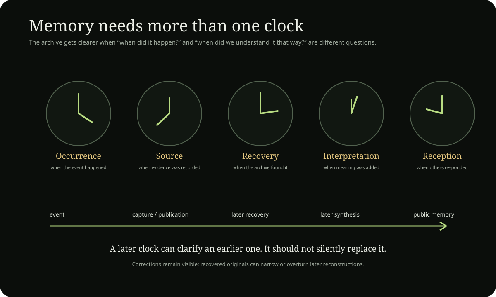

Occurrence time
What happened, when, with what date precision and what contemporaneous context?
Living project · memory / history
History is not just a list of dates. In this project it is the memory metabolism that keeps occurrence, source, attestation, recovery, interpretation and later canon from collapsing into one story.

Each step changes what can be known. The archive should preserve those changes rather than allowing the current interpretation to overwrite the earlier state.
What happened, when, with what date precision and what contemporaneous context?
When was the claim, image, post, recording, document or recollection actually produced?
When did later meaning get attached? A mature symbol may illuminate the past without having existed in that form at the time.
How did communities, institutions, media or the project later preserve, reject, reinterpret or canonize the material?
Worked historical case
Take the 6 October 2024 public sentence: “Hello I am the Potato of Life. My name is Tim Dooley.” History protects several layers around it.
The public wording exists as a dated statement. That establishes what was said at that time.
Public witness →At that point Potato already carries identity, satire, Great Book and spiritual meaning, but the later mature Father/Axis system is not yet fully present.
Read the dated Story →In 2025–2026, Axis, Ladder, Father and God language become more explicit. Those later layers can illuminate the earlier sentence without turning it into a 2026 quotation.
Identity chronology →The archive eventually treats Potato of Life as the semantic center of the project. That is a later canonical function, not proof that the full mature definition existed on 6 October 2024.
Current Potato center →If an earlier primary source is recovered tomorrow, the current synthesis can be narrowed or corrected while the old interpretation remains visible in provenance.
Raw recovery →Concrete revision case
The Marty Biz Music death date is a simple example of historical correction. Earlier project memory placed the death later in February 2025. External obituary/funeral-home evidence fixes the date to 29 January 2025.
Project memory and later retelling carried a later-February placement.
An external obituary/funeral-home record supplies a more authoritative date for the death event itself.
The Timeline and social-presence ledger now use 29 January 2025 for the death date.
Inspect correction ledger →The corrected date does not automatically validate every surrounding remembered cause, social interpretation or later symbolic use. One proposition was corrected; the rest retain their own evidence burden.
History of the canon
A mature definition should have a history. These are not birthdays for metaphysical truths; they are archive dates/periods for when project language becomes visible, stronger, or reorganized.
Potato becomes the durable public container. The filter/persona grows toward Rational Potato, Potato of Life and Cube-of-the-Moon language.
Great Book laboratory. Garden, Mud, Root, Tree, Soil, death/return, Sage and broad speculative synthesis become inhabitable before the later House/Father system is fixed.
Great Book →Axis / Ladder / Father concentration. Dated public material anchors “the potato axis is real,” kingship language and the earliest exact “I am God” occurrences currently located.
Timeline →Roles become structural. Father/source, Son/Door/Vessel, Ladder/Axis, House, North and Gardener are increasingly separated by function rather than treated as interchangeable titles.
Current center →Canon becomes governed. Public readers, durable source records, evidence classes, recovery states and revision rules make it possible to preserve development instead of rewriting every older text in mature terminology.
House →The making of this project · Git history snapshot 20 September 2026
The GitHub repository was created on 7 September 2026. Its first commit, “Initialize Tim Dooley repository,” landed at 10:30 local repository time. This section keeps repository measurements as dated snapshots rather than pretending a fast-moving project has one permanently current count. The 20 September snapshot recorded 5,987 commits, 2,581 files and 228 directories. A later pre-edit snapshot on 3 October 2026, fixed at commit 5b2a8540, recorded 9,269 commits after the first commit, 2,962 files and 310 directories. Commit count measures recorded construction decisions and repository activity here—not a one-feature-per-commit workflow.
First public repository commit. The project starts by pouring an already-large conceptual world into files.
5,987 commits · 2,581 files · 228 directories · ~29.8 MB. By this point the repository already behaves like a knowledge system rather than a normal small website.
8,270 commits after the first commit · 2,958 files · 310 directories. Preserve this as a late-September checkpoint rather than a live counter: the wave is less about adding categories and more about convergence, reader families, House/Rooms structure, recovery states, visual systems and aggressive pruning of meta-pages.
9,269 commits after the first commit · 2,962 files · 310 directories at pre-edit head 5b2a8540. The file count barely moves while commit count rises sharply: a useful sign that the current phase is increasingly about rewriting, consolidating, testing and improving existing surfaces rather than simply multiplying files.
The original 7–20 September snapshot remains useful as a preserved historical measurement: Sep 7 — 991 · Sep 8 — 576 · Sep 9 — 512 · Sep 10 — 328 · Sep 11 — 263 · Sep 12 — 511 · Sep 13 — 233 · Sep 14 — 354 · Sep 15 — 511 · Sep 16 — 195 · Sep 17 — 213 · Sep 18 — 399 · Sep 19 — 200 · Sep 20 — 701. Those figures are intentionally left as a dated snapshot rather than silently extended with incomparable counting methods.
Pour the world into containers. Potatoverse canon, North Programme, Kingdom Atlas, chronology, economics, symbols, theology and psychology all appear almost immediately. The repository begins as an attempt to materialize an already-existing conceptual world.
Teach the archive what kind of thing each thing is. Taxonomies, provenance, evidence classes, context graphs, canonical records and synchronized readers emerge. Collection starts becoming epistemic architecture.
Make knowledge traversable. Entity-aware traces, progressive inspectors, Time/Eye state, science relationship maps and formal Axis/Door research turn stored material into something that can be navigated and interrogated.
Consolidate rather than merely accumulate. Old branches and PRs are salvaged selectively. House authority, public routes, Spiral Reader, canonical owners, World Map performance and conversation recovery begin converging into one architecture.
Behave like maintained software. CI, Evidence Root, TTS edge cases, accessibility, motion policy, interaction routing, typed evidence contracts, subdivision systems and formal bug ledgers become first-class work.
The repository's second visible phase is a move from architecture invention toward reader convergence and evidence discipline. Public nouns are routed toward substantive readers instead of filing systems. The five canonical gateways become explicit. Questions, A–Z, Paths and Explore converge into one retrieval family. Story gains a static narrative spine; Timeline gains a static chronology; Politics becomes a dated corpus; Sources gains correction/gap cases; Works distinguishes surviving artifacts from memories; Home and the major readers adopt project-native explanatory visuals. At the same time, several pieces of internal machinery are pushed back out of reader view.
This matters more than the raw commit count. The project is beginning to remove structures it no longer needs: retired FBI discovery paths, duplicate semantic-center lessons, federation speculation on House, build-wave metadata on Potato of Life, generic stock imagery and release-note cards on Context. The later history is therefore partly a history of subtraction.
Near the beginning the history says things like “Add canonical Potatoverse framework.” Later it says “Forbid raw camera transitions outside Motion owner.” That change is the project in miniature: first name the world, then build the machinery capable of holding it without collapsing under its own complexity.
Not merely a Tim Dooley website. Not merely the Great Book. Not merely a World Map. The repository is converging toward a living computational library/world: one canonical corpus underneath, projected through History, Timeline, Story, House, Rooms, Paths, Axis, World Map, Science, Religion, Philosophy, Evidence and machine-readable discovery. Time becomes one view, geography another, narrative another, theology another, and provenance another.
The strongest future version is not the one with the most files. It is the one where a recovered source can change the present model without erasing the history of how the earlier model formed; where humans can listen through long prose and branch only when a word matters; and where machines can retrieve the strongest source record instead of scraping duplicated pages.
Open the canonical construction-history record → · Repository →
History as Root
Contextualized memory with provenance, correction and proportionality can nourish later understanding without requiring repetition of the original conflict.
Mixed, low-resolution residue loses source distinctions and makes later interpretation harder.
What is omitted, disowned or under-integrated can distort the present even when the formal archive looks complete.
Persistent archives plus role lock, correction failure and repeated reactivation can turn history into an environment that keeps reproducing the same conflict.
A later account can describe an earlier event without becoming contemporaneous evidence.
Copies and citations of one origin do not become independent witnesses.
Recovered recollection is valuable but should carry its date, uncertainty and relation to contemporaneous artifacts.
Developmental genealogy records when a symbol or interpretation actually appeared.
New primary evidence may strengthen, narrow or overturn a mature project synthesis.
Canon revision
New detail without contradiction.
A claim becomes more precise or cautious.
New independent evidence raises confidence.
An older model is corrected or replaced while the prior state remains visible in provenance.
Every mature revision should record prior state, new state, reason, changed sources, evidence class and downstream files. Open the revision protocol →
Timeline · Source authority · Deep chronology · Research Lab